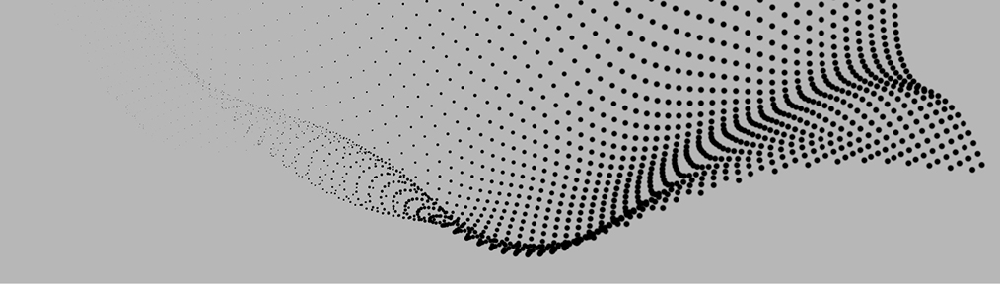

<md-sidenav-container fullscreen >

  <md-toolbar class="app-md-toolbar">

      <button md-icon-button (click)="sidenav.toggle()">
        <i class="material-icons md-24 md-pink">menu</i>
      </button>
      

      <span class="app-toolbar-filler"></span>
      <span> </span>


  </md-toolbar>

  <md-sidenav #sidenav mode="side" [align]="start" class="app-sidenav">
    <my-sidenav></my-sidenav>
  </md-sidenav>

  <span class="app-content">
    <my-tab></my-tab>
  </span>


  <md-toolbar class="app-md-toolbar-footer"></md-toolbar>


</md-sidenav-container>
